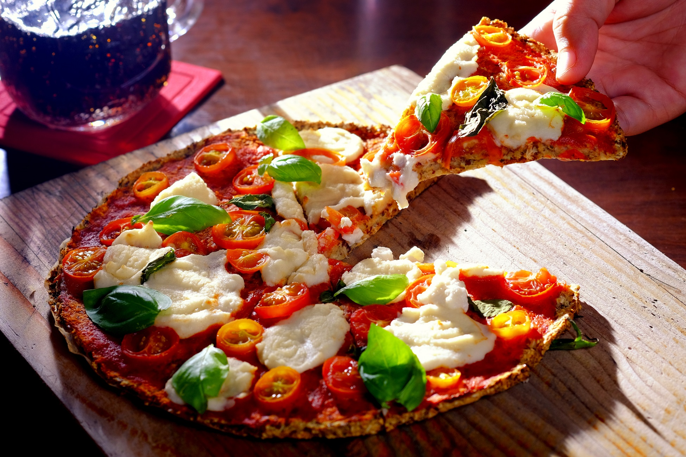

Vegan Pizza Margherita
Vegan Pizza Margherita Recipe Page

Description
This vegan pizza recipe could be fun for the kids to do for Father's Day. Pizza isn't often considered a light meal, but this vegan option definitely is.
Nutrition Info
- Prep: 20 mins
- Cook: 1 hr 8 mins
- Additional: 1 hr
- Total: 1 hr 43 mins
- Servings: 4
- Yield: 4 servings
Ingredients
Pizza Crust:
- ¼ cup water
- 3 tablespoons flaxseed meal
- 5 cups cauliflower florets
- ½ cup rolled oats
- 1 teaspoon dried rosemary
- ½ teaspoon salt
- ¼ teaspoon garlic powder
Vegan Mozzarella Cheese:
- ¾ cup cashews
- 1 ¼ cups water
- 2 tablespoons tapioca starch
- 1 tablespoon nutritional yeast
- 1 teaspoon apple cider vinegar
- ½ teaspoon salt
- ¼ teaspoon garlic powder
Marinara Sauce:
- ¾ cup cashews
- 1 ¼ cups water
- 2 tablespoons tapioca starch
- 1 tablespoon nutritional yeast
- 1 teaspoon apple cider vinegar
- ½ teaspoon salt
- ¼ teaspoon garlic powder